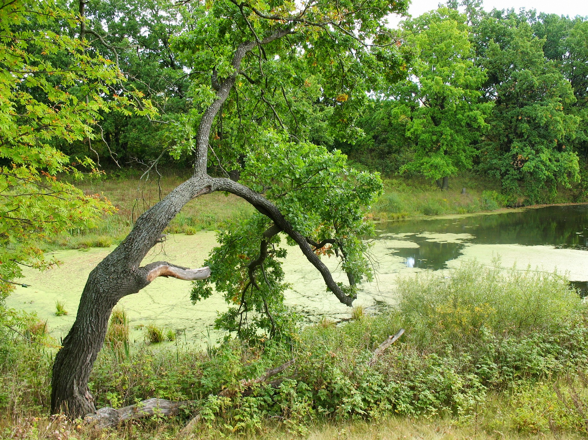
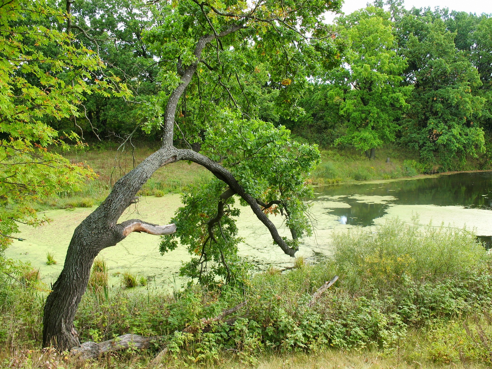

Цікаві факти
 

- На планеті Земля нараховують понад трьох трильйонів дерев (3 тис. млрд), а це більше, ніж число зірок у нашій галактиці! Якщо просумувати це число у секундах, то для цього потрібно буде рахувати майже 100 років. На кожну людину припадає
близько 408 дерев. Найбільше дерев у Росії, 22% усієї кількості дерев на планеті, а це близько 640 млрд штук. Принаймні, таку масштабну інформацію у 2015 році представив загалу дослідник й науковець Томас Кроутер, який два роки детально
вивчав це питання разом із групою вчених у рамках проекту ООН. До цього вважалося, що на планеті у дев’ять разів менше дерев.
- На планеті налічується більш як 60 тис. видів дерев. Близько 300 видів дерев перебувають під загрозою зникнення: в кожному з видів – не більш як 50 одиниць. Зокрема, у Танзанії зростає всього шість дерев виду Karomia gigas. Найбільше видове
різноманіття представлено в Бразилії (8 715), Колумбії (5 776) і Індонезії (5 142). Каталогізацією сучасних видів дерев займалися вчені з Міжнародної ради зі збереження ботанічних садів (Botanical Gardens Conservation International,
BGCI)
- Щороку люди вирубують 15 млрд дерев у зв’язку зі своєю діяльністю, плюс потрібно враховувати ще пожежі, які регулярно стаються. В середньому, щороку люди висаджують взамін близько 5 млрд дерев. А за весь час існування людської цивілізації
Земля втратила половину свого лісового покриву. У липні цього року в Індії волонтери за 12 годин висадили рекордну кількість дерев – понад 66 мільйонів. В акції на підтримку Паризької кліматичної угоди взяли участь півтора мільйона
осіб, плантація розташована в басейні річки Нармада в штаті Мадхья Прадеш. Індійцям вдалося побити власний рекорд дворічної давності, коли було посаджено за раз 50 млн дерев.
- Найвищим деревом у світі вважається секвоя, яка росте у США, штат Каліфорнія. Висота цього хмарочоса – 115 метрів, а діаметр цілих 8 метрів. А от найтовстіші дерева – це баобаби, їх стовбури виростають у діаметрі аж до 16 м! Баобаби поширені
в саванах Африки, Мадагаскару та Австралії.
- Найстаріші дерева ростуть у США, а саме у Каліфорнії та Неваді. Дерева взагалі є найбільш довго живучими живими організмами на Землі, деякі з них можуть жити тисячами років. Науково зафіксовані найдавніші представники дерев мають вік близько
5 тис. років, окремі екземпляри є старшими за відомі Єгипетські піраміди. А от найстаріша коренева система дерев росте у Швеції. Її вік приблизно 9,5 тис. років. Тобто на місці старого дерева виростає молодняк, а корінь залишається
той самий. До речі, місце перебування багатьох тисячолітніх дерев є засекреченим, адже наплив туристів явно не додає здоров’я таким довгожителям. Серед дерев також є ті, які живуть всього декілька десятків років, бо їх стратегія вимагає
чим швидше виконати всі свої основні функції, тому їх життєва енергія вигоряє за короткий відрізок часу. Це в основному дерева-піонери, які швидко й на далекі відстані поширюються.
- Одне дерево за рік зазвичай виробляє 100-200 кг кисню. Цього достатньо для дихання людини впродовж цілого року. Також всього лише одне дерево здатне поглинути за рік стільки вуглекислого газу, скільки виробляє автомобіль за час пробігу
у 30-40 тис. км. Саме тому за життя таки варто посадити, як мінімум, одне дерево. Рекордсменом щодо виділення кисню є тополя. 1 га тополь виділяє в атмосферу кисню у 40 разів більше, ніж скажімо 1 га хвойних. Також цікаво, що вночі,
коли дерева відпочивають чи навіть «сплять», то, вони, навпаки виділяють вуглекислий газ, який утворюється після спалення цукру для харчових процесів. А от листя дерев є зеленим тому, що зелений спектр світла не засвоюється у процесі
фотосинтезу, а відбивається від листочків. Через те, листя та й вся природа видається нам зеленою. Також цікаво, що дерева в середньому щодня викачують кілька сотень літрів води із землі, випиваючи десятки і утримуючи у своїх резервах
решту рідини.
- Дерева розмовляють між собою, бо, як не дивно, вони – складні соціальні живі істоти. Мова дерев повна інформації про умови їх життя, вони говорять про те, добре їм чи погано. Посилають свої оповіщення дерева через корені, що об’єднують
їх у єдину мережу всіх представників одного виду. Ці оповіщення поширюються не тільки через хімічні сполуки, а через електричні імпульси, що рухаються зі швидкістю один сантиметр на секунду. Також дерева говорять через проміжне залучення
грибів, які є своєрідним інтернетом лісу через схожість із принципом роботи волокно-оптичних кабелів, тонкі волокна прошивають ґрунт і обплітають його з неймовірною щільністю. Дерева викидають ароматичні речовини через листя, які теж
несуть у собі інформації для інших дерев. Адже, коли дерево зазнає атаки збоку якихось шкідників, то воно виділяє на боротьбу із ними певні сполуки, які стають для інших дерев сигналом для мобілізації. Також дерева говорять не лише
між собою, але із комахами, які можуть їх запилити – це приємні ароматичні послання під час цвітіння. Фруктові дерева, верби й каштани через запашне повідомлення звертають на себе увагу, запрошують скуштувати свого солодкого нектару
і мимохідь допомогти у розмноженні. Та найцікавіше, що дерева здатні говорити також звуковими хвилями! Прилади реєструють тихе потріскування коренів за частоти 220 герц. Щоразу, коли корені чують це потріскування, вони спрямовують
свої кінчики коріння у відповідний бік, ніби розвертаючи голову до співрозмовника. Тому, гуляючи лісом, можна почути тихе потріскування, яке, можливо, є не просто вітром, а своєрідною розмовою дерев. Принаймні, це одна із теорій. Про
це і значно більше можна дізнатися у чудовій книзі німецького лісника й професора Петера Воллебена «Таємниче життя дерев», у якій він описує практичну філософію дерев, їх цікавий світ. Основна теза – дати можливість лісу рости без
мінімального втручання людини, адже він і до нас мільйонами років давав собі раду і виробив свою неповторну структуру життя.
- Дерева піклуються одне про одного. Для прикладу, якщо одне дерево зрубують до пня, то інші дерева того ж виду, через корінну систему допомагають вижити цьому пеньку. Вірогідно, після «плачу» і розмови з сусідами, вони надають йому поживні
речовини, які дерево більше не в змозі самостійно добувати. Також, за схожим принципом діють родинні стосунки. Адже у лісі молодняку складно отримати всю необхідну кількість сонячної енергії і цукру під покровом своїх високих покровителів,
тому дерева-»батьки» також через корінну систему підживлюють своїх потомків, які, коли виростають, можуть також допомагати їм у скрутних становищах, для прикладу опиратися своїми старими гілками, коли лютують вітри. Все це свідчить,
що для дерев важливою є комунікація, тому ліс – це соціальна структура дерев, у якій відбувається: допомога, розмова, і пересікання спільних інтересів.
- Світове дерево – один із найстаріших сакральних символів людства, уособлює собою єдність і вічне життя. Міф про світове дерево зустрічається у багатьох віруваннях, від іранської міфології, кельтських друїдів (до речі слово «друїд» означає
дерево і мудрий) до скандинавських та слов’янських міфів. Зокрема, у християнстві є згадка про «Дерево життя», яке посадив Бог у Раю, і його плоди здатні подарувати вічне життя тому, хто їх скуштує. Крім цього, хрест у християнстві
– це не лише символ розіп’ятого Ісуса, це також символ вічного життя й спасіння, яке люди споконвіків уособлювали з деревами, що можуть жити тисячами років.
- У США на перетині вулиць Саут-Фінлі і Дірінг в містечку Афіни, штат Джорджія росте дерево, яке належить самому собі (англ. Tree That Owns Itself). Цей цікавий дуб уособлює собою право дерева на самого себе, які дерева, як живі організми,
безперечно, мають. За міською легендою, дерево є «законним власником» самого себе і землі в радіусі восьми футів від нього. Легенда, яка виникла у XIX ст., розповідає, що у власника цієї землі полковника Вільяма Джонсона з цим деревом
були пов’язані спогади про дитинство і, бажаючи захистити його від можливих зазіхань, він нібито підписав з деревом акт дарування, згідно з яким воно ставало власником самого себе і землі в радіусі восьми футів від нього. Та дуб, який
фігурує в початковій історії, впав у 1942 році, але на його місці був посаджений один з його жолудів, з якого до теперішнього часу виросло нове дерево, яке іноді називають «Син Дерева, яке належить самому собі». Дерево стало предметом
безлічі публікацій і є місцевою туристичною визначною пам’яткою.